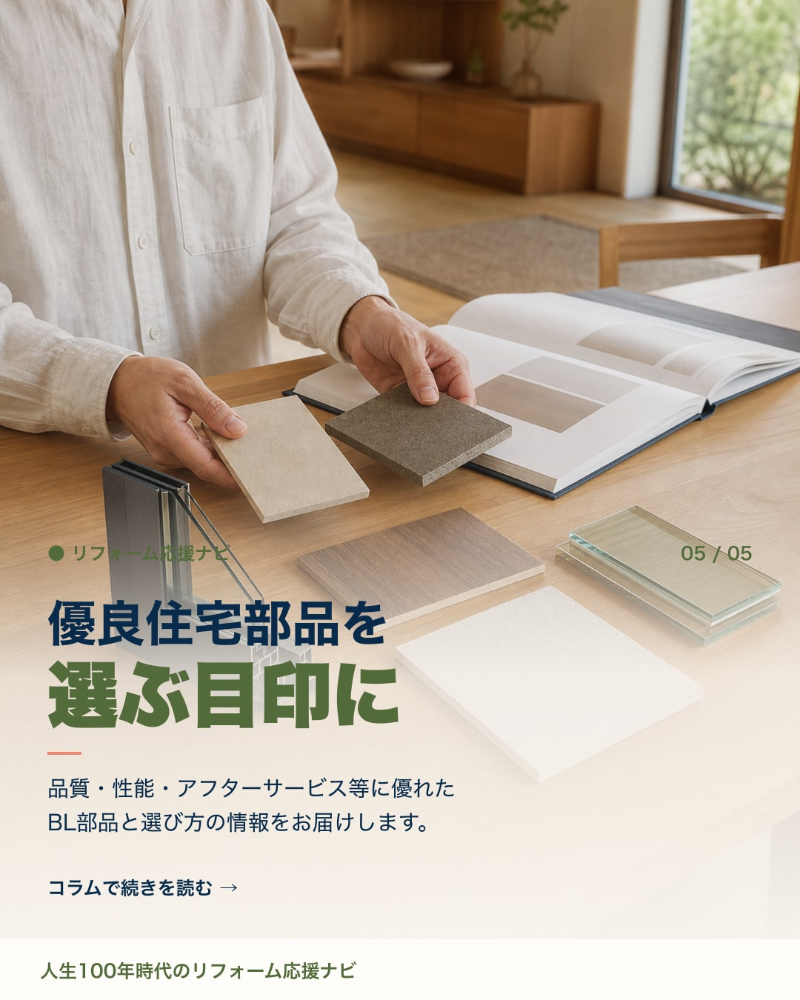
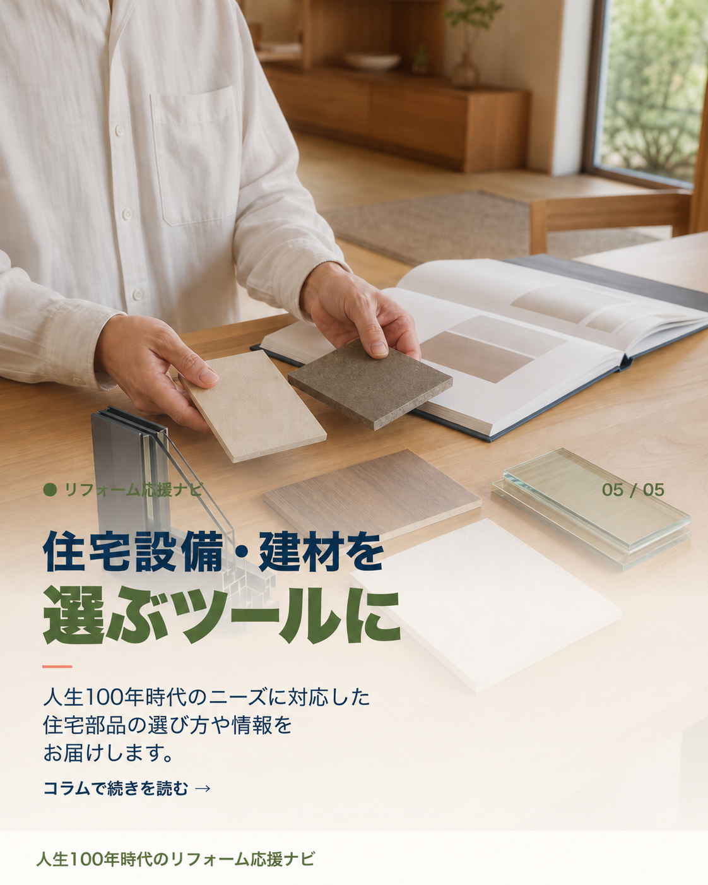

リフォーム応援ナビ · Instagram投稿
投稿No.1 追加修正確認
「信樂修正.docx」の指示2件を反映しました。今回の対象は投稿No.1の6枚目とキャプションです。第2〜16回および17以降の新規案は変更していません。
2026年9月15日更新 · 制作側確認済み／先方の最終確認待ち · Instagramへの投稿は未実施
6枚目の見出しと説明文
指示内容
リフォーム応援ナビ 住宅設備・建材を選ぶツールに 人生100年時代のニーズに対応した住宅部品の選び方や情報をお届けします。
対応内容
「優良住宅部品を選ぶ目印に」から、住宅設備・建材の選び方を案内する表現へ変更しました。見出しと説明文を指定どおりに差し替え、ラベル・ページ番号・コラムへの誘導・フッターは維持しています。
指定文章の一致、文字のはみ出し・重なり、見出しと説明文の大きさの差を確認済み。画像をタップすると、1枚ずつ原寸で開けます。


案内先の名称を変更
指示内容
「ベターリビング」 → 「人生100年時代のリフォーム応援ナビサイト」
対応内容
既存キャプション本文の名称のみを置換しました。文脈に接続する「のコラム」など、その他の文章は変更していません。
修正前の本文を読む
こんにちは。住まいと暮らしの「これから」を一緒に考えるアカウントです。家・お金・防災・断熱・実家じまい…暮らしの知恵を、ベターリビングのコラムと連動してやさしくお届けします。保存して見返してくださいね。
修正後の本文
前回までの確認ページと元データは保存しています。本ページは今回の2件の追加修正を確認するためのページです。